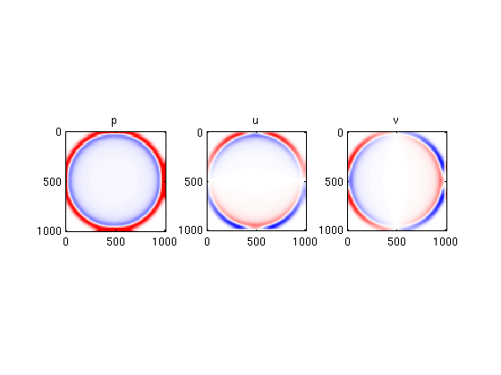

2D Acoustic wave-equation
Contents
set parameters
method = 'fourier';
nd = 2;
L = 1e3*ones(1,nd);
N = 100*ones(1,nd);
Ns = 50*ones(1,nd);
T = .5;
rho0 = 1e3;
c0 = 1e3;
define matrices etc.
Grad = opGrad(Ns,L,method,false);
xc = Grad.x{1};
yc = Grad.x{2};
[xxc,yyc] = ndgrid(xc,yc);
S = [opZeros(prod(Ns)) Grad; -Grad' opZeros(nd*prod(Ns))];
rho = rho0*ones(Ns);
kappa = (c0^2*rho0)*ones(Ns);
M = opDiag([kappa(:).^(-1);rho(:);rho(:)]);
x = linspace(0,L(1),N(1));
y = linspace(0,L(2),N(2));
A = opKron(opInt(yc,y,method),opInt(xc,x,method));
w0 = zeros([Ns 3]);
w0(:,:,1) = exp(-1e3*(((xxc - mean(xc))/L(1)).^2 + ((yyc - mean(yc))/L(2)).^2));
w0 = w0(:)/max(abs(w0(:)));
solve ODE
tic
options = odeset('Stats','on','OutputFcn',@odewbar);
[t,wsol] = ode23(@(t,w)(M\(S*w)),[0 T],w0,options) ;
toc
225 successful steps
5 failed attempts
691 function evaluations
Elapsed time is 1.691956 seconds.
plot
wsol = reshape(wsol,[length(t) prod(Ns) 3]);
for j=1:1:length(t);
pj = reshape(A*squeeze(wsol(j,:,1).'),N);
uj = reshape(A*squeeze(wsol(j,:,2).'),N);
vj = reshape(A*squeeze(wsol(j,:,3).'),N);
subplot(1,3,1);
imagesc(y,x,pj,[-1 1]*1e-1);title('p');colormap(seiscol);axis equal tight;
subplot(1,3,2);
imagesc(y,x,uj,[-1 1]*1e-7);title('u');colormap(seiscol);axis equal tight;
subplot(1,3,3);
imagesc(y,x,vj,[-1 1]*1e-7);title('v');colormap(seiscol);axis equal tight;
drawnow;
pause(.001);
end
